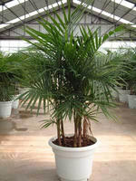

夏威夷椰子
位置分布在学校楼层里，二楼和三楼及四楼附近不常见到我们班外面就有一颗，数量不多，学校不超过8颗。纲：单子叶植物纲目：棕榈目科：棕榈科属：茶马椰子属

- 夏威夷椰子种植
- 夏威夷椰子可用播种和分株繁殖。播种种子要随采随播，在温度25℃时约3－4个月萌发。植株在生长过程中，地下根茎可横向伸长，并可萌蘖新芽新枝，所以春季可将生长茂密的植株分切繁殖，以含3－5根的一丛为一新株种植。分切时要注意少伤根部，并使每一丛保留一定根系，否则恢复慢，甚至影响成活。�
- 夏威夷椰子盆栽宜用疏松、通气透水良好、富含腐殖质的基质，一般可用腐叶土、园土、河沙等量混合并加少量腐熟有机肥混合配制，作为培养基质。生长季节3－10月，每1－2周施一次液肥或颗粒状复合肥，以促进叶生长及叶色浓绿。它对温度要求为10℃。生长期要求经常保持盆土湿润，空气干燥时要经常进行叶面喷水，以提高环境的空气湿度，这样有利植株生长并保持叶面浓绿，富有泽；秋末及冬季适当减少浇水量，保持盆土湿润不干即可，以增强植株抗寒越冬能力。夏威夷椰子生长要求较明亮的散射光，要避免强光直射，否则叶色变淡或发黄；耐阴性强，可较长时间在室内光线较 暗的环境中生长。一般在室内阴暗环境摆放1－2个月对植株观赏不会有太大的影响。在高温高湿条件下，夏威夷椰子可能发生褐斑病和霜霉病，对此可用杀菌剂（如多菌灵或托布津1000倍液）喷杀防治。�
进入百度